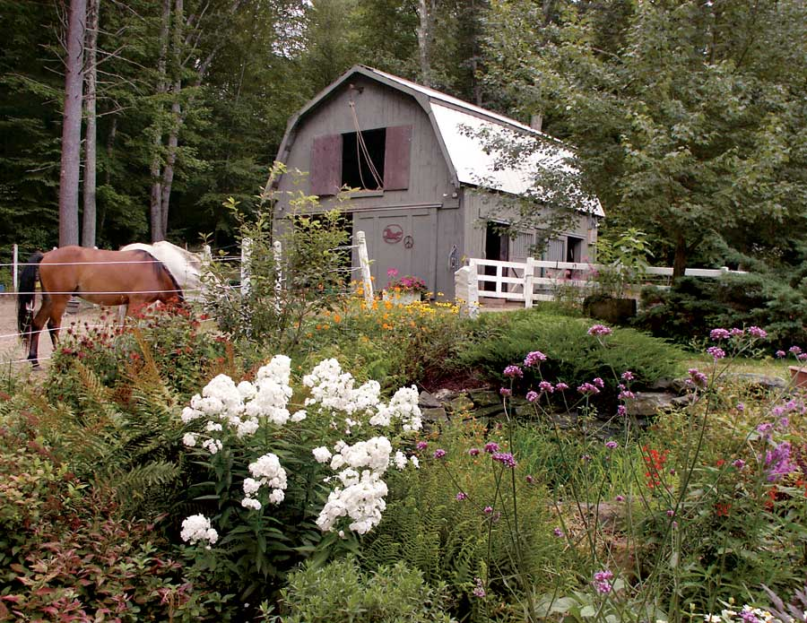
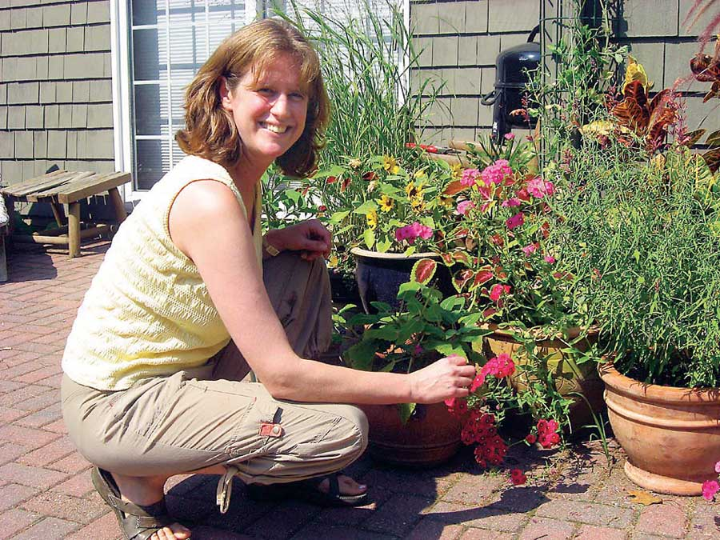
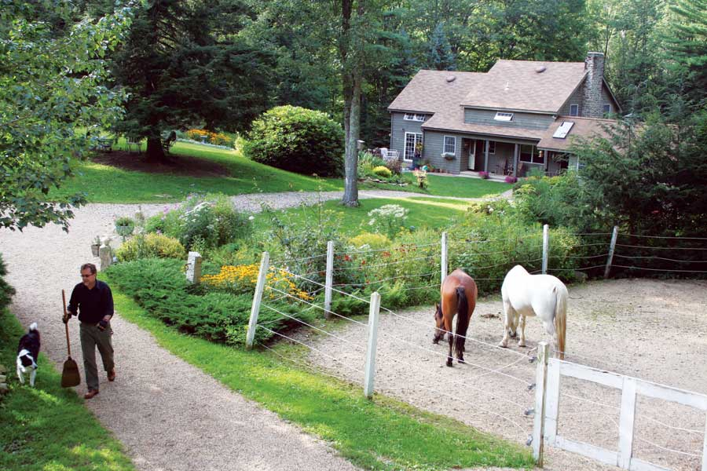
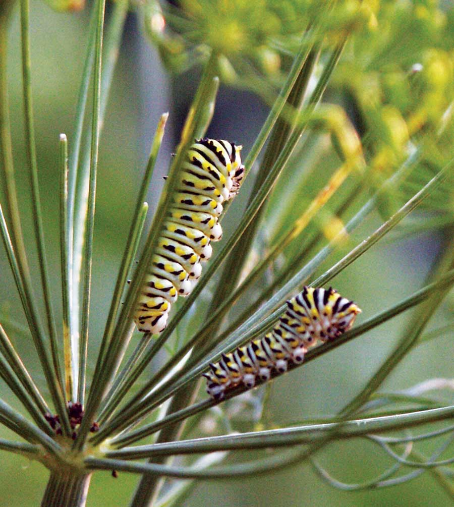
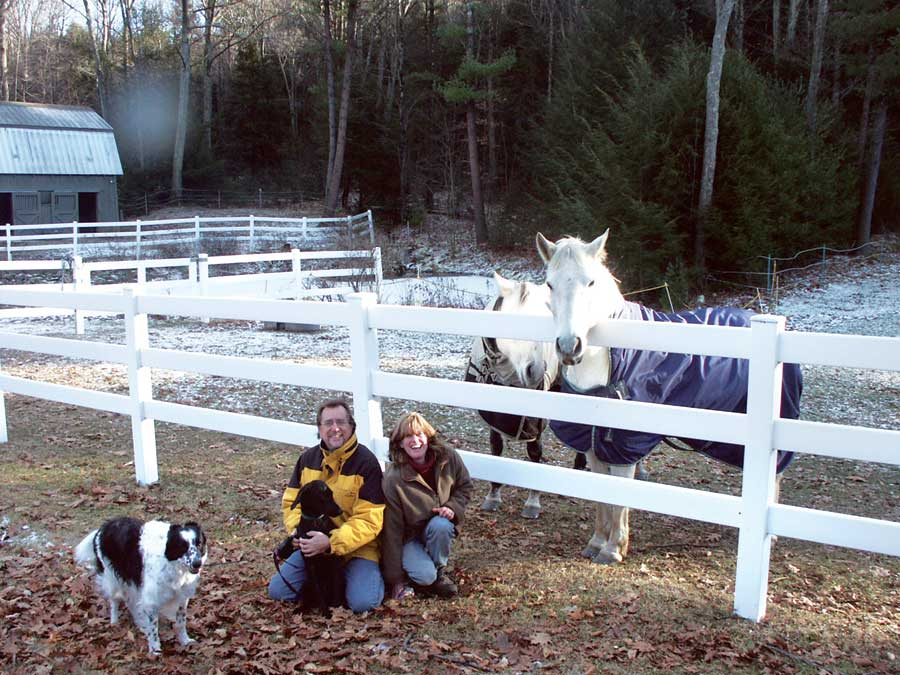
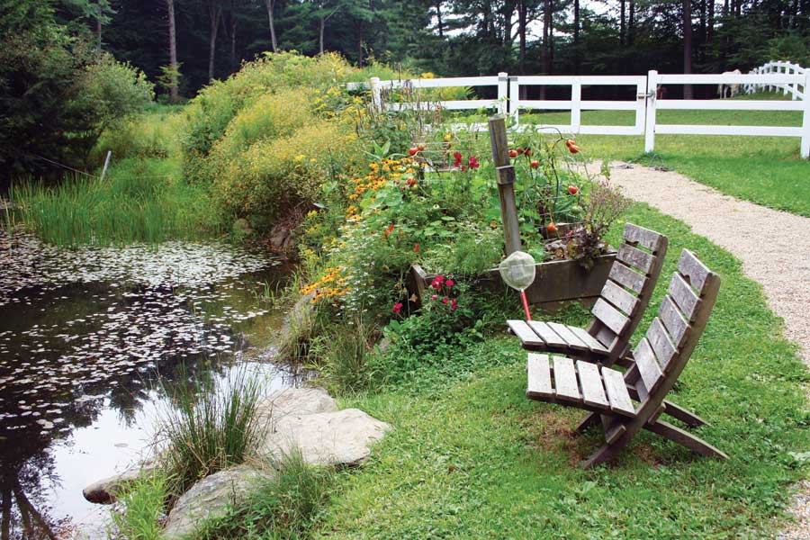
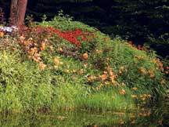
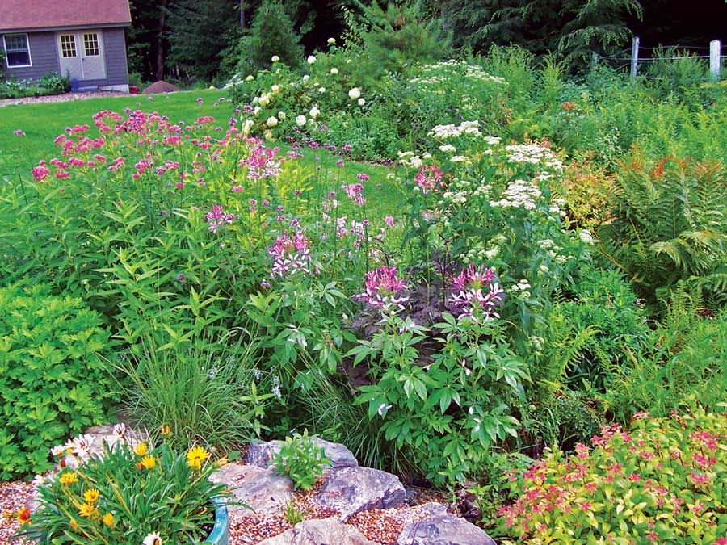
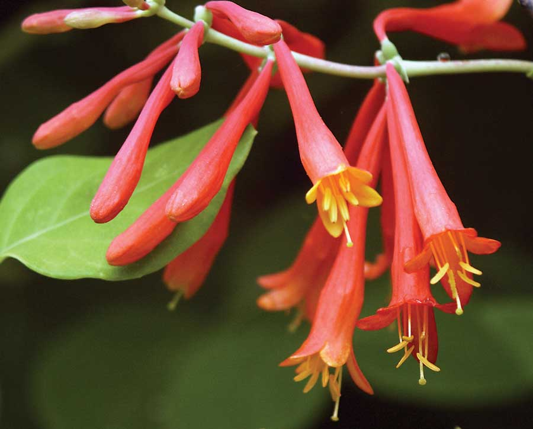

We fell in love with this farm the moment we saw it. My husband, Robert, and I had been looking for a property where we could fulfill my lifelong dream of keeping my horses at home (rather than boarding them). And, as a passionate gardener, I immediately recognized the potential of this four-acre parcel of hemlock- and beech-wooded river valley in central Massachusetts, complete with a farm pond, stream and large pasture. It was a gardener’s dream.
Previous owners had established wonderful garden “bones” with fieldstone retaining walls, damming a stream to create a pond, and using electric fencing to keep horses from eating the plants and shrubs.
Beautiful as the property was, it was ready for a gardening intervention. I was eager to eradicate invasive and non-native plants in order to encourage a diverse and robust habitat of native plants, insects and wildlife. So, in addition to the horse farm and food garden, I dove headfirst into resurrecting and nurturing the native plant and wildlife populations. We bought bare-root native “wildlife-friendly” shrubs (gray and silky dogwood, serviceberry, bayberry, blueberry, viburnum and chokeberry) from our local conservation district (you can find your conservation district at www.nacdnet.org), and planted groups of them to create thickets providing habitat for many birds, snakes, insects and small mammals. The flowers of these shrubs, after being pollinated by various tiny insects, turn into berries that provide important sustenance to migrating birds who return (exhausted and hungry) here in spring. I chose native plants already adapted to our localized New England climate. When planted in their natural growing conditions, these plants require no fertilizer or supplemental irrigation (other than rainfall) once established.
By buying and planting just a few native plants, I was able to collect their seeds and propagate them in large numbers. I took classes at the New England Wild Flower Society’s native plant center, and grew beautiful native flowering plants such as butterfly weed, liatris, coneflower, boltonia, rose mallow, virginia rose, rudbeckia, New England aster, perennial sunflowers (helianthus) and native grasses, such as switch grass. We also encouraged the wild goldenrod to seed itself to provide late-season nectar for butterflies, as well as seeds for birds.
Genetic diversity helps plant species survive environmental threats such as global warming and competition from invasive species, and growing native plants is a valuable way to help protect biodiversity as a whole. By doing so, I was able to help establish new and genetically diverse populations of many native plants, which are disappearing from our region as New England becomes increasingly urbanized.
During our first summer here, we watched ruby-throated hummingbirds visit the flowers of the bee balm, trumpet honeysuckle, verbena and scarlet runner beans I had planted to attract these feisty, flying characters. We added a bat house to the side of our barn, and our horses were grateful to the bats, which gorged on horse-flies and mosquitoes. Butterflies visited the salvia, aster, sunflower, zinnia and cosmos, and caterpillars of the monarch butterfly hatched on the scarlet milkweed I grew in a pot on the patio.
The first winter, we put up bird feeders and nesting boxes to encourage birds to nest in our yard. Sure enough, that spring, a pair of tree swallows nested in the birdhouse at the edge of our pasture, and our barn hosted a family of Eastern phoebes. Both birds are insect-eating machines, so we were happy to have them on the farm. Since then, they have returned every spring, like old friends.
We also left an area next to our riding ring unmowed, allowing native grasses such as little bluestem to grow, and we saw fireflies for the first time during our second summer here. We seeded white Dutch clover into bare areas of the lawn, and encouraged wild violets and bluets to grow into a low-maintenance lawn that stays green without irrigation, even through the hot, dry periods of August. Our lovely spring-flowering “lawn” is a valuable nectar source for early-season butterflies and pollinators, in turn attracting birds hunting for insects to feed their nestlings.
Our farm has water flowing through it, so keeping manure and excess nutrients from our barn and composting areas from leaching into the water is a challenge. But when we moved the horse fences away from the pond’s edge, we ended up with some great planting areas - full sun with constant moisture! We planted beautiful native bird- and pollinator-friendly shrubs and perennials, such as bee balm, great blue lobelia, swamp milkweed, New England aster, blue flag iris, Joe Pye weed, Turk’s cap lily, summersweet, ninebark, cranberry viburnum, elderberry and winterberry holly. This area now thrives with no irrigation and little fuss, and provides a smorgasbord of food and cover for many winged visitors throughout the year. The vegetation acts as a natural buffer to the pond, filtering pollutants and absorbing runoff from the barn. The water from the pond leads into the town’s water supply, so we’re keeping our water clean while providing valuable wildlife habitat.
We left part of the pond’s edge as a rocky shoreline, which gives snakes, turtles and butterflies warm places to bask on sunny days. The rocks also invite kids to net a frog or sweaty gardeners to dip their bare feet in the water on hot summer days. Our pond is a magnet for nature-starved children, and we leave nets and buckets out for them to try catching a tadpole, shiner or, hardest of all, a catfish.
With horses at home, composting is a way of life for us. We produce incredibly rich compost using horse manure, kitchen scraps, pizza boxes, brown grocery bags, fall leaves and yard trimmings. I even shred white paper junk mail and add it to my compost - which I find very satisfying! Because of our compost, we use no chemical pesticides or synthetic fertilizers on our property. Adding the compost to the pasture and lawns encourages beneficial soil organisms and worms to thrive, and ultimately provides even more food for visiting birds. And, by composting our organic waste, we send little waste to landfills. With our town’s system of trash disposal, in which you pay only for the trash you throw away, we save money by composting what we would ordinarily send out with the trash.
We also reclaimed large areas of lawn and created planting beds by saving old newspaper and cardboard, dampening them with a hose and spreading them in thick layers to smother the grass underneath. Robert used a tractor to dump loads of partially composted manure on top of the layers. Within a few months, worms worked their way through the newspaper and turned the area into wonderfully rich planting soil for all the new plants and shrubs.
Coaxing crops out of the glacial rubble of our soil is not always easy, but by using raised vegetable beds enriched with semiannual tractor loads of compost, and including companion plants to entice beneficial insects and repel pests, we harvest great yields and rarely have pest problems other than the occasional potato beetle (easily flicked into a jar of soapy water and thrown into the compost pile). I plant lots of flowers in and around the vegetables to attract pollinators, whose services ensure a bountiful harvest. With all of the birds and bats - nature’s pest control - the garden has a natural balance.
In 2006, we registered our property with the National Wildlife Federation as a Certified Backyard Wildlife Habitat. But there’s still work to do. In woodland areas of the property, we continue to try to curb the invasion of Japanese pachysandra and vinca, which have spread from former gardens into the woods, crowding out native populations of plants. I’m on the constant lookout for the ubiquitous seedlings of Asiatic bittersweet and multiflora rose, and the highly invasive woodland plant garlic mustard has been spotted on nearby roadsides - so I need to keep watch for that new invader, too. Helping to stop the proliferation of invasive plants in the New England landscape is a satisfying way to help the wildlife who depend upon the resources supplied by native plants for all or part of their life cycles.
People often comment about the amount of physical work we put into our property. Both my husband and I love to be outdoors and are fortunate to be the “energetic” type. And to us, the tangible results of our work are so satisfying that it’s worth the elbow grease. Each year, we attract new and interesting wildlife visitors, and we love the ever-changing spectacle of life here. Growing some of our own food is a satisfying and healthy way to reduce our carbon footprint, and the daily routine required to keep farm animals makes us feel connected to the Earth’s cycles in a way that seems to shelter us from the struggles and stresses of the outside world. It’s a good life.
Unfortunately, as we took an inventory of the property, we found many non-native invasive vines and shrubs choking out our region’s natural vegetation. We spent a year or two removing thickets of multiflora rose and Japanese honeysuckle, and pulling out miles of the Asiatic bittersweet vine muscling out hemlock and birch saplings. We also removed the burgundy-leaved Japanese barberry and burning bush planted by previous owners. These popular horticultural shrubs are now listed as invasive plants in Massachusetts. We’d seen their offspring crowding into wooded areas near our property (their berries are spread by birds), so we knew they had to go.
Removing the invasives was a daunting task, but by using a tractor and chains to pull up the rootballs of the larger invasives, and a weed wrench and sheer persistence to remove the smaller species, we got them under control.
After removing the invasives, we immediately started to plant nectar plants (for butterflies and other pollinators such as hummingbirds); seed-producing plants to encourage birds and small mammals; and native shrubs and understory trees to provide shelter, nesting sites and safe travel routes for birds, insects, frogs, snakes and bats. I included butterfly host plants to provide the leaves and stems required as a food source by a variety of young caterpillars of butterflies and moths. We allowed fall leaves to build up at the edge of the woods, and were gradually rewarded by the exciting appearance of New England native woodland beauties such as lady’s slipper, trillium and Solomon’s seal. Ferns appeared and filled in anywhere there was a bare spot. The results were well worth the effort.
|
 ELLEN SOUSA The Sousa's have turned their farm into a sanctuary for native plants, and for Ellen's horses. |
 ELEN SOUSA The first time she saw the property, Ellen Sousa knew it was a gardener’s dream come true. |
 ELLEN SOUSA At last, gardens and horses! |
|
 ELLEN SOUSA Caterpillars on dill. |
 ELLEN SOUSA Ellen, Robert and their crew. |
 ELLEN SOUSA The pond is a perfect spot to unwind after a long day. |
|
 ELLEN SOUSA Bee balm and ninebark “Diablo” thrive on the pond bank. |
 ELLEN SOUSA Bee balm and ninebark “Diablo” thrive on the pond bank. |
 ELLEN SOUSA The ruby-throated hummingbirds love our trumpet honeysuckle. |